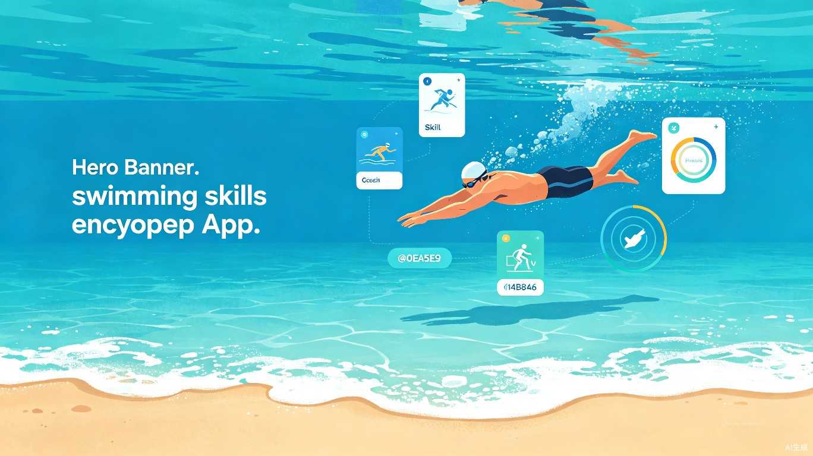
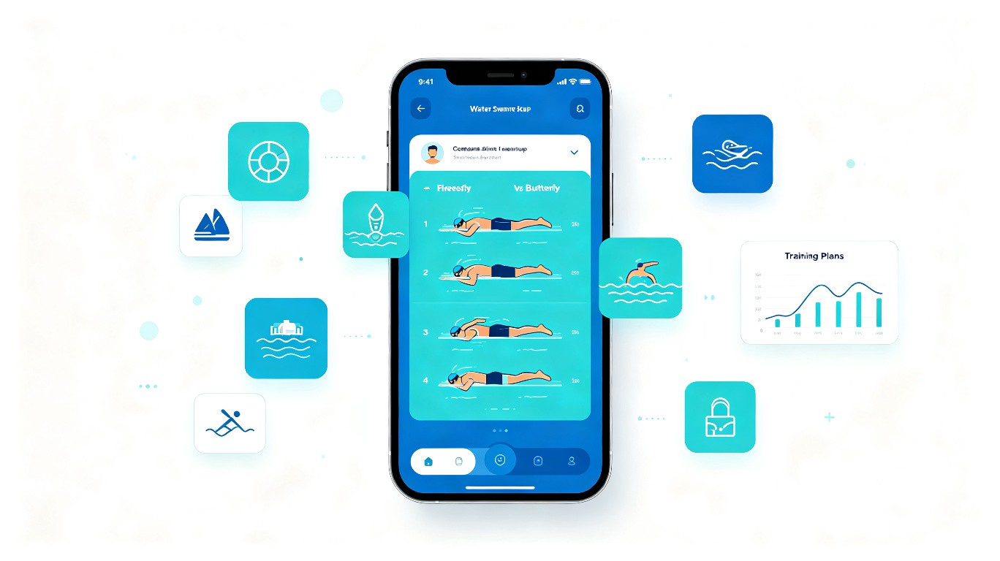
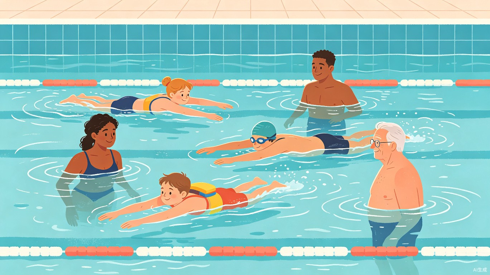

一款基于 AI 大模型驱动的游泳技巧百科应用，为不同水平的游泳爱好者提供个性化的动作解析、智能训练计划、安全知识科普，让每个人都能科学、安全地学会游泳。

游泳是一项全民受益的运动技能，但在中国，仍有超过 70% 的成年人不会游泳。学游泳的门槛远比想象中高——找不到好教练、看不懂动作要领、害怕水中安全风险，这些痛点阻碍了无数人迈出第一步。
专业游泳教练集中在一线城市的大型游泳馆，二三线城市和社区泳池教练资源匮乏，费用高昂（单节课 200-500 元），很多人望而却步。
网上游泳教程质量参差不齐，短视频平台的内容缺乏系统性和专业性，初学者难以分辨正确与错误的动作要领，容易养成错误姿势。
溺水是中国 1-14 岁儿童意外死亡的首要原因。大量游泳爱好者缺乏水中安全知识、自救技巧和紧急情况应对能力，安全隐患严重。
项目灵感来源于团队成员自身的学泳经历——辗转多个游泳馆、花费大量时间和金钱却收效甚微。我们意识到：游泳学习需要一款低门槛、系统化、随时可用的数字化工具来填补教练资源不足的空白，让优质教学内容触手可及。
「泳技通」是一款移动端优先的游泳技巧百科应用（同时支持 Web 端和微信小程序），利用 AI 大模型为用户打造个性化的游泳学习体验。从零基础入门到进阶技巧提升，覆盖全阶段、全泳姿的系统性教学内容。
用户上传自己的游泳视频或对照标准动作图，AI 自动分析动作偏差，生成个性化的纠正建议。支持自由泳、蛙泳、蝶泳、仰泳四大泳姿，逐帧分解手部、腿部、呼吸配合要点。

基于用户的当前水平和学习目标，AI 自动生成循序渐进的训练计划。从热身、核心练习到放松，每个训练单元都有详细的动作要领、组数、时长建议，并支持进度追踪和自适应调整。

结构化的泳姿知识库，覆盖四大泳姿的分解教学。每个动作配有文字说明、动画演示、常见错误提醒，从入门到精通逐步深入。
上传视频或对照标准图，AI 实时分析动作偏差，给出具体改进建议。支持对比模式，直观展示个人动作与标准动作的差异。
根据用户水平和目标，AI 生成定制化训练方案。支持自由设置训练频率、目标泳姿、时间安排，自动调整训练强度。
涵盖水中自救技巧、溺水预防、开放水域安全常识等关键内容。采用情景模拟和动画演示，让安全知识深入人心。
内置游泳领域的 AI 问答助手，用户随时提问——"蛙泳换气总呛水怎么办？"等实际问题，获得专业、通俗的即时解答。
可视化展示学习曲线和技能掌握度。通过里程碑系统和成就徽章激励持续学习，让进步看得见。
「泳技通」面向所有想学游泳或提升游泳技能的人，核心用户群体和使用场景如下：
从未学过游泳的成年人，因为害怕水、找不到教练、时间不灵活等原因一直未能开始。希望在安全引导下迈出第一步。
正在学游泳的孩子和青少年，需要系统性的技能指导和安全知识。家长希望孩子掌握这项生存技能，同时也关注安全。
已经掌握基本泳姿，希望通过科学训练提升速度和耐力的游泳爱好者。需要专业训练计划和动作优化建议。
希望通过游泳进行低冲击锻炼的中老年人。需要特别关注的安全指导和适合身体状况的入门内容。
相比线下教练（200-500元/节课），「泳技通」提供低至零成本的入门方案，让经济条件有限的用户也能获得专业指导。预计可帮助用户节省 60% 以上的学习成本。
AI 个性化方案使学习路径更精准。系统化的知识体系和智能纠错，让用户在更短时间内掌握核心技能，预计学习效率提升 3 倍以上。
中国每年约 5.9 万人死于溺水，其中大量是儿童。普及游泳技能和安全知识，能够有效减少溺水事故，是一项具有重大社会意义的公益事业。
「泳技通」采用现代化的技术栈，结合 AI 大模型能力实现智能化服务。以下是核心技术选型：
泳姿百科知识库 + AI 问答助手 + 基础训练计划，覆盖 Web 端和小程序
视频动作分析 + 个性化纠错 + 进度追踪系统，上线移动端 App
社区互动 + 教练入驻 + 线下课程推荐，构建游泳学习生态闭环